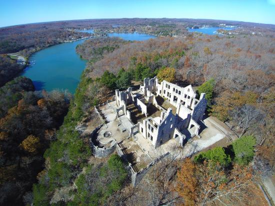

Top 3 Hikes in Missouri!
Missouri is home to some of the best outdoor scenery in the Midwest. This short list will show you my favorite three spots to hike in the Show-Me State!
Spot #1: Taum Sauk State Park
- Highest point in Missouri!
- View Mina Sauk waterfall - the state's highest waterfall.
- Beautiful scenery in the St. Francois mountains.
Spot #2: Castlewood State Park
- Just 20 minutes outside of St Louis.
- Hike in the rolling hills alongside the Meramec River.
- Adjacent to Lone Elk Park - a reserve for elk and bison.
- Also adjacent to the World Bird Sanctuary - a reserve for threatened birds.
Spot #3: Ha Ha Tonka State Park

- Hike among the ruins of an 20th Century castle!
- Explore multiple caves along the trails, if you're feeling brave.
- Right on Lake of the Ozarks - Missouri's largest lake and a wonderful place to take a retreat.